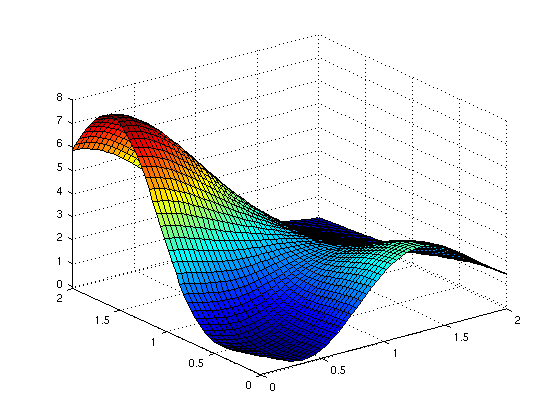

spinterp
Evaluation of the sparse grid interpolant.Syntax
IP = spinterp(Z,Y1,...,YD)[IP,IPGRAD] = spinterp(Z,Y1,...,YD)Description
IP = spinterp(Z,Y1,...,YD) Computes the interpolated values IP at the point(s) (Y1, ..., YD) over the sparse grid. The input parameters Yi may be double arrays of equal size for vectorized processing. The sparse grid data must be given as a structure Z containing the hierarchical surpluses (computed with spvals).
[IP,IPGRAD] = spinterp(Z,Y1,...,YD) Computes interpolated values IP and derivatives IPGRAD at the specified points. The derivatives are returned as D x 1 gradient vectors inside of a cell array that has equal size as the double array IP. See Section "Derivatives" for additional information.
Two additional options are available with spinterp that are set by adding a field to the structure Z:
selectOutput [ integer {1} ]Set the output variable number if an interpolant with multiple output variables was constructed withspvals.continuousDerivatives [ 'on' | {'off'} ]Enable augmented continuous derivatives for the Clenshaw-Curtis grid.
Examples
Assume a sparse grid interpolant of the Matlab peaks function has been computed for the domain [0,2]^2 using the following command:z = spvals(@(x,y) peaks(x,y), 2, [0,2; 0,2]);
Then, we can evaluate z at a single point, e.g. the point (0.5, 0.5), simply like this:
ip = spinterp(z, 0.5, 0.5);
ip =
0.3754
If multiple evaluations of the interpolant are required, it is best to use a vectorized call to spinterp for fast processing. For example, to evaluate the interpolant at the full grid [0,2]x[0,2] at 50x50 points (equidistant spacing), we can proceed as follows:
x = linspace(0,2,50); y = linspace(0,2,50); [xmat,ymat] = meshgrid(x,y); tic; ip = spinterp(z, xmat, ymat); toc
Elapsed time is 0.202514 seconds.
Note that the output size of ip matches the size of the input matrices:
size(xmat) size(ip)
ans =
50 50
ans =
50 50
We could visualize the result using the surf command:
surf(xmat, ymat, ip);
axis tight;

See Also
spvals.